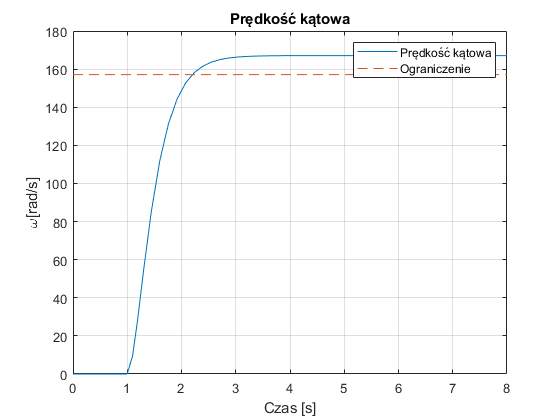
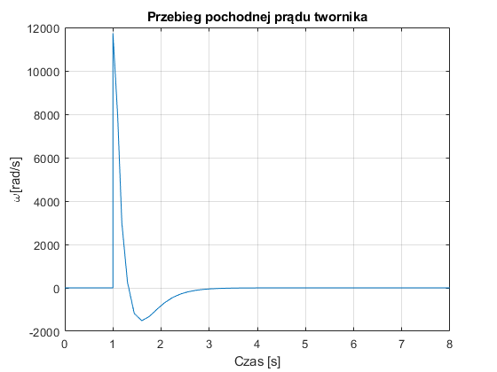
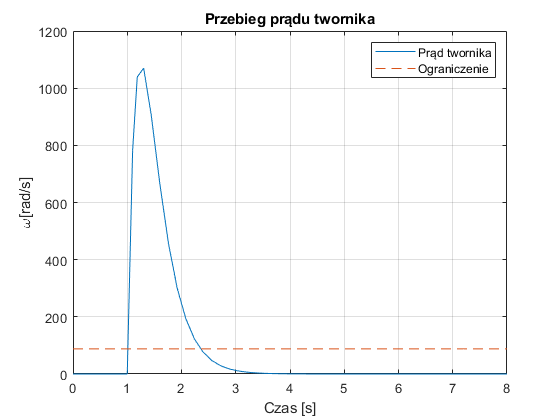
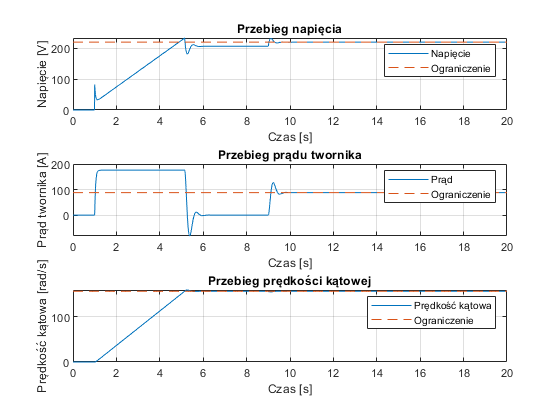
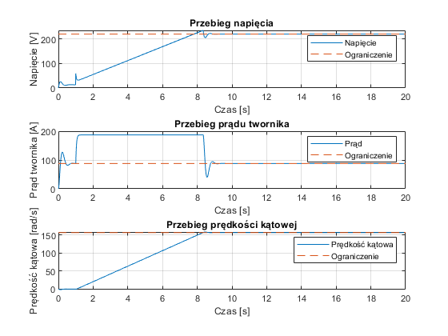
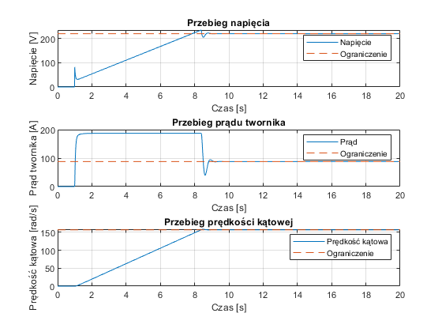
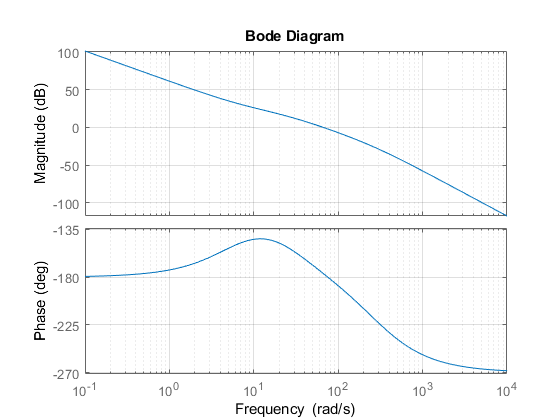
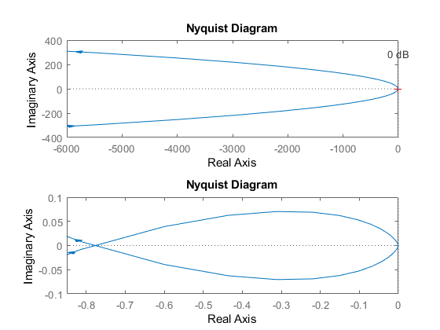
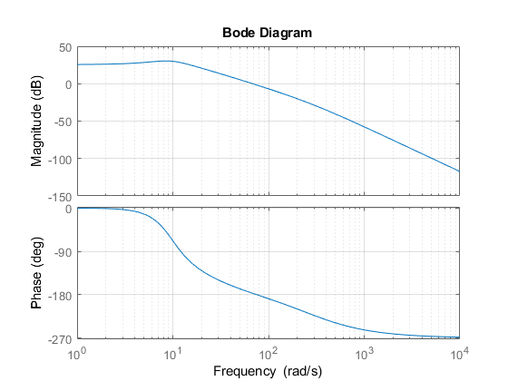
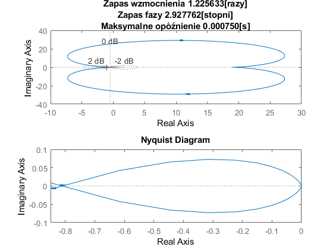

Contents
clear all; close all
Dane wejś›ciowe
Pn = 17e3;
Un = 220;
In = 88;
nn = 1500;
Rt = 0.15;
Lt = 18.75e-3;
Js = 0.275;
L = Lt;
R = Rt;
J = 22*Js;
wn = 2*pi*nn/60;
lambda_n = 2;
p = 50;
Beta = lambda_n/p;
psi_e = (Un-In*R)/wn;
B = J*R/(psi_e^2);
T = L/R;
Tm = 0;
Mn=psi_e*In;
Mm=Mn;
Mb=Mn*sign(wn);
if B > 4*T
disp('Ok')
else
disp('Zle')
end
Ok
Obliczenie transmitancji
G_wU = tf([0 0 1/psi_e],[B*T B 1]);
G_wM = tf([0 Rt/(psi_e^2)*T Rt/(psi_e^2)],[B*T B 1]);
G_IU = tf([0 B/Rt 0],[B*T B 1]);
G_IM = tf([0 0 1/psi_e],[B*T B 1]);
sim('pkt1.slx')
wn_wektor=ones(1,length(dane.time))*wn;
In_wektor=ones(1, length(dane.time))*In;
Un_wektor=ones(1,length(dane.time))*Un;
figure; plot(dane.time, dane.signals.values(:,1),dane.time, wn_wektor,'--')
title('Prędkość kątowa'); xlabel('Czas [s]'); ylabel('\omega[rad/s]'); grid on;
legend('Prędkość kątowa', 'Ograniczenie')
figure; plot(dane.time, dane.signals.values(:,2))
title('Przebieg pochodnej prądu twornika'); xlabel('Czas [s]'); ylabel('\omega[rad/s]'); grid on;
figure; plot(dane.time, dane.signals.values(:,3),dane.time, In_wektor,'--');
title('Przebieg prądu twornika'); xlabel('Czas [s]'); ylabel('\omega[rad/s]'); grid on;
legend('Prąd twornika', 'Ograniczenie')
  
Nastawy regulatora prądu
Y=10/(2.5*In);
Kt=10/(1.2*wn);
wz=wn*Kt;
Kp=1.5*Un/10;
T1=0.5*B*(1-sqrt(1-4*T/B));
B1=B-T1;
kz=(B1-Beta)/(Y*B1);
m=T1;
V=Beta*Y*Kp*B/((B1-Beta)*Rt);
Uz0=lambda_n*In*Y*B1/(B1-Beta);
Nastawy regulatora prędkości PI
TR=4*Beta;
Kw=J/(2*Kt*kz*Beta*psi_e);
Rozruch bez momentu obciążenia i obciążenie udarowe(stabilizacja)
sim('moment_udarowy.slx')
wn_wektor=ones(1,length(omega.time))*wn;
In_wektor=ones(1, length(Is.time))*In;
Un_wektor=ones(1,length(Us.time))*Un;
f=figure;
set(f,'name','Rozruch bez momentu obciążeniia i obciążenie udarowe(stabilizacja)')
subplot(311)
plot(Us.time(:,1), Us.signals.values(:,1), Us.time, Un_wektor,'--');
title('Przebieg napięcia')
xlabel('Czas [s]')
ylabel('Napięcie [V]')
legend('Napięcie', 'Ograniczenie')
grid on;
subplot(312)
plot(Is.time(:,1), Is.signals.values(:,1), Is.time, In_wektor,'--');
title('Przebieg prądu twornika')
xlabel('Czas [s]')
ylabel('Prąd twornika [A]')
legend('Prąd', 'Ograniczenie')
grid on;
subplot(313)
plot(omega.time(:,1), omega.signals.values(:,1), omega.time, wn_wektor,'--');
title('Przebieg prędkości kątowej')
xlabel('Czas [s]')
ylabel('Prędkość kątowa [rad/s]')
legend('Prędkość kątowa', 'Ograniczenie')
grid on;

Rozruch ze znamionowym momentem czynnym
sim('moment_czynny.slx')
wn_wektor=ones(1,length(omega.time))*wn;
In_wektor=ones(1, length(Is.time))*In;
Un_wektor=ones(1,length(Us.time))*Un;
f=figure;
set(f,'name', 'Rozruch ze znamionowym momentem czynnym')
subplot(311)
plot(Us.time(:,1), Us.signals.values(:,1), Us.time, Un_wektor,'--');
title('Przebieg napięcia')
xlabel('Czas [s]')
ylabel('Napięcie [V]')
legend('Napięcie', 'Ograniczenie')
grid on;
subplot(312)
plot(Is.time(:,1), Is.signals.values(:,1), Is.time, In_wektor,'--');
title('Przebieg prądu twornika')
xlabel('Czas [s]')
ylabel('Prąd twornika [A]')
legend('Prąd', 'Ograniczenie')
grid on;
subplot(313)
plot(omega.time(:,1), omega.signals.values(:,1), omega.time, wn_wektor,'--');
title('Przebieg prędkości kątowej')
xlabel('Czas [s]')
ylabel('Prędkość kątowa [rad/s]')
legend('Prędkość kątowa', 'Ograniczenie')
grid on;

Rozruch ze znamionowym momentem biernym
sim('moment_bierny.slx')
wn_wektor=ones(1,length(omega.time))*wn;
In_wektor=ones(1, length(Is.time))*In;
Un_wektor=ones(1,length(Us.time))*Un;
f=figure;
set(f,'name', 'Rozruch ze znamionowym momentem biernym')
subplot(311)
plot(Us.time(:,1), Us.signals.values(:,1), Us.time, Un_wektor,'--');
title('Przebieg napięcia')
xlabel('Czas [s]')
ylabel('Napięcie [V]')
legend('Napięcie', 'Ograniczenie')
grid on;
subplot(312)
plot(Is.time(:,1), Is.signals.values(:,1), Is.time, In_wektor,'--');
title('Przebieg prądu twornika')
xlabel('Czas [s]')
ylabel('Prąd twornika [A]')
legend('Prąd', 'Ograniczenie')
grid on;
subplot(313)
plot(omega.time(:,1), omega.signals.values(:,1), omega.time, wn_wektor,'--');
title('Przebieg prędkości kątowej')
xlabel('Czas [s]')
ylabel('Prędkość kątowa [rad/s]')
legend('Prędkość kątowa', 'Ograniczenie')
grid on;

Zapas fazy i modułu
tau0=3.3e-3
RegPredkosc = tf([Kw*TR Kw],[TR,0]);
RegMoment = tf([m 1],[V 0]);
PrzeksztTyryst = tf([Kp],[tau0 1]);
Silnik = tf([B 0],[Rt*B1*T1 Rt*(B1+T1) Rt]);
Bezwlad = tf([1],[J 0]);
uklad = series(RegMoment,PrzeksztTyryst);
uklad = series(uklad,Silnik);
uklad = feedback(uklad, Y);
uklad = series(RegPredkosc,uklad);
disp('Transmitancja otwartego układu regulacji: ');
uklad = series(uklad,Bezwlad)
f = figure; set(f,'name','Bode plot dla układu otwartego','numbertitle','off');
bode(uklad);grid on;
f = figure; set(f,'name','Nyquist plot dla układu otwartego','numbertitle','off');
subplot(2,1,1);
nyquist(uklad);grid on;
subplot(2,1,2);
nyquist(uklad); axis([-0.85 0 -0.1 0.1]);
disp('Transmitancja zamkniętego układu regulacji: ');
uklad = feedback(uklad, Kt)
f = figure; set(f,'name','Bode plot dla układu zamkniętego','numbertitle','off');
bode(uklad);grid on;
[Gm,Pm,Wgm,Wpm] = margin(uklad);
f = figure; set(f,'name','Nyquist plot dla układu zamkniętego','numbertitle','off');
subplot(2,1,1);
nyquist(uklad);grid on; title(sprintf('Zapas wzmocnienia %f[razy]\nZapas fazy %f[stopni]\nMaksymalne opóźnienie %f[s]',Gm,Pm,Pm*pi/180/Wpm));
subplot(2,1,2);
nyquist(uklad); axis([-0.85 0 -0.1 0.1]);
tau0 =
0.0033
Transmitancja otwartego układu regulacji:
uklad =
32.11 s^3 + 356.4 s^2 + 973 s
------------------------------------------------------
2.368e-05 s^6 + 0.007365 s^5 + 0.2146 s^4 + 0.8699 s^3
Continuous-time transfer function.
Transmitancja zamkniętego układu regulacji:
uklad =
32.11 s^3 + 356.4 s^2 + 973 s
------------------------------------------------------------------------
2.368e-05 s^6 + 0.007365 s^5 + 0.2146 s^4 + 2.573 s^3 + 18.91 s^2
+ 51.62 s
Continuous-time transfer function.
Warning: The closed-loop system is unstable.
   